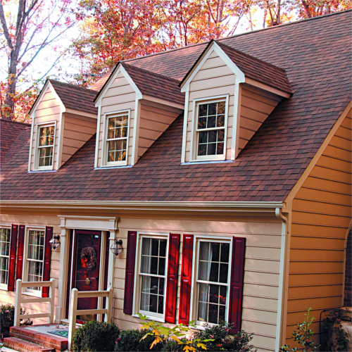
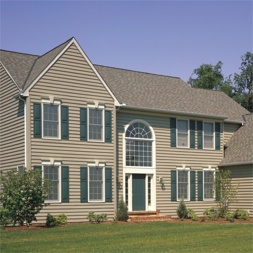
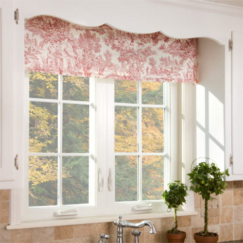

We have been providing top-quality workmanship at a reasonable price for
100 years. All of our work is guaranteed.
We have been providing top-quality workmanship at a reasonable price for
100 years.
All of our work is guaranteed.

Roofing
Home owners in New England are selective about the roof and roofing
contractor they choose. We understand you want roofing materials
that improve the look of your home, material that lasts a long
time, and a contractor who is trustworthy, responds promptly and
performs high quality work. Pratt and Son is a CertainTeed
professional roofing contractor.

Vinyl Siding
Insulated vinyl siding is top choice in New England homes and
business. Vinyl siding looks great, and its insulating qualities
reduce energy consumption. This means you are warmer in the
winter, cooler in the summer and pay lower energy bills.

Windows
Whether you need new vinyl windows or replacement vinyl windows
for your home or business, Pratt and Son has all sizes, shapes
and colors to choose from. Make an appointment for our in-home
demo. Get your property ready today for New England cold winter months
and hot summer months.
What People are Saying...
"Thank you and your staff for the magnificent job that your company
just completed at our home in Newton. This is the third job that
you’ve done for our family and each one is a ‘work of art.’ Your
company is truly a joy to do business with! Keep up the fine work!"
"I observed your work in my neighborhood and was impressed. Your work
crew was exceptional. They were hard-working craftsmen and very
real gentlemen."
"My wife and I would like to extend our gratitude for an excellent
vinyl siding and roofing job recently performed on our home. The work
crews assigned to both projects were more than professional and
appeared to take an enormous pride in their work. As a result,
our home is now by far the nicest on the street if not the entire
subdivision. No other siding or roofing job even comes close to the
one performed on our home by Pratt and Son.
Need help choosing roofing, vinyl siding, or replacement vinyl windows
for your home or business? We are happy to serve the Greater Boston
and Eastern Massachusetts area including Sharon, Canton, Stoughton,
Easton, Taunton, West Roxbury, Walpole, Norwood, Westwood, Roslindale,
Foxboro, Franklin, Mansfield, and surrounding towns.